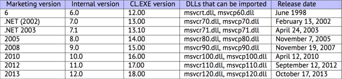

PART V 寻找代码中有趣或者重要的部分
现代软件设计中，极简不是特别重要的特性。
并不是因为程序员编写的代码多，而是由于许多库通常都会静态链接到可执行文件中。如果所有的外部库都移入了外部DLL文件中，情况将有所不同。(C++使用STL和其他模版库的另一个原因)
因此，确定函数的来源很重要，是否来源于标准库或者其他著名的库(比如Boost，libpng)，是否与我们在代码中寻找的东西相关。
通过重写所有的C/C++代码来寻找我们想要的东西是不现实的。
逆向工程师的一个主要的任务是迅速定位到目标代码。
IDA反汇编工具允许我们搜索文本字符串，字节序列和常量。甚至可以导出为.lst或者.asm文件，然后使用grep,awk等工具进一步分析。
当你尝试去理解某些代码的功能时，一些开源库比如libpng会容易理解一些。当你觉得某些常量或者文本字符串眼熟时，值得用google搜索一下。如果你发现他们在某些地方使用了开源项目时，那么只要对比一下函数就可以了。这些方法能够解决部分问题。
举个例子，如果一个程序使用XML文件，那么第一步是确定使用了哪个XML库。通常情况下使用的是标准库(或者有名的库)而非自编写的库。
再举个例子，有一次我尝试去理解SAP 6.0中网络包如何压缩与解压。整个软件很大，但手头有一个包含详细debug信息的.PDB文件，非常方便。最后我找到一个负责解压网络包的函数，叫CsDecomprLZC。我马上就用google搜索了函数名，发现MaxDB(一个开源SAP项目)也使用了这个函数。http://www.google.com/search?q=CsDecomprLZC
然后惊奇的发现，MaxDB和SAP 6.0 使用同样的代码来处理压缩和解压网络包。
第55章
识别可执行文件
55.1 Microsoft Visual C++
可导入的MSVC版本和DLL文件如下图：

msvcp*.dll包含C++相关函数，因此如果导入了这类dll，便可推测是C++程序。
55.1.1命名管理
命名通常以问号?开始。
获取更多关于MSVC命令管理的信息：51.1.1节
55.2 GCC
除了*NIX环境，Win32下也有GCC，需要Cygwin和MinGW。
55.2.1 命名管理
命名通常以_Z符号开头。
更多关于GCC命名管理的信息：51.1.1节
55.2.2 Cygwin
cygwin1.dll经常被导入。
55.2.3 MinGW
msvcrt.dll可能会被导入。
55.3 Intel FORTRAN
libifcoremd.dll,libifportmd.dll和libiomp5md.dll(OpenMP支持)可能会被导入。
libifcoremd.dll中许多函数以前缀名for_开始，表示FORTRAN。
55.4Watcom,OpenWatcom
55.4.1 命名管理
命名通常以W符号开始。
举个例子，下面是"class"类名为"method"的方法没有任何参数并且返回void的加密：
W?method$_class$n__v
55.5 Borland
这里有一个有关Borland Delphi和C++开发者命名管理的例子：
@TApplication@IdleAction$qv
@TApplication@ProcessMDIAccels$qp6tagMSG
@TModule@$bctr$qpcpvt1
@TModule@$bdtr$qv
@TModule@ValidWindow$qp14TWindowsObject
@TrueColorTo8BitN$qpviiiiiit1iiiiii
@TrueColorTo16BitN$qpviiiiiit1iiiiii
@DIB24BitTo8BitBitmap$qpviiiiiit1iiiii
@TrueBitmap@$bctr$qpcl
@TrueBitmap@$bctr$qpvl
@TrueBitmap@$bctr$qiilll
命名通常以@符号开始，然后是类名、方法名、加密方法的参数类型。
这些名称会被导入到.exe，.dll和debug信息内等等。
Borland Visual Component Libarary(VCL)存储在.bpl文件中，而不是.dll。比如vcl50.dll,rtl60.dll。
其他可能导入的DLL：BORLNDMM.DLL。
55.5.1 Delphi
几乎所有的Delphi可执行文件的代码段都以"Boolean"字符串开始，和其他类型名称一起。 下面是一个典型的Delphi程序的代码段开头，这个块紧接着win32 PE文件头：
00000400 04 10 40 00 03 07 42 6f 6f 6c 65 61 6e 01 00 00 |..@...Boolean...|
00000410 00 00 01 00 00 00 00 10 40 00 05 46 61 6c 73 65 |........@..False|
00000420 04 54 72 75 65 8d 40 00 2c 10 40 00 09 08 57 69 |.True.@.,.@...Wi|
00000430 64 65 43 68 61 72 03 00 00 00 00 ff ff 00 00 90 |deChar..........|
00000440 44 10 40 00 02 04 43 68 61 72 01 00 00 00 00 ff |D.@...Char......|
00000450 00 00 00 90 58 10 40 00 01 08 53 6d 61 6c 6c 69 |....X.@...Smalli|
00000460 6e 74 02 00 80 ff ff ff 7f 00 00 90 70 10 40 00 |nt..........p.@.|
00000470 01 07 49 6e 74 65 67 65 72 04 00 00 00 80 ff ff |..Integer.......|
00000480 ff 7f 8b c0 88 10 40 00 01 04 42 79 74 65 01 00 |......@...Byte..|
00000490 00 00 00 ff 00 00 00 90 9c 10 40 00 01 04 57 6f |..........@...Wo|
000004a0 72 64 03 00 00 00 00 ff ff 00 00 90 b0 10 40 00 |rd............@.|
000004b0 01 08 43 61 72 64 69 6e 61 6c 05 00 00 00 00 ff |..Cardinal......|
000004c0 ff ff ff 90 c8 10 40 00 10 05 49 6e 74 36 34 00 |......@...Int64.|
000004d0 00 00 00 00 00 00 80 ff ff ff ff ff ff ff 7f 90 |................|
000004e0 e4 10 40 00 04 08 45 78 74 65 6e 64 65 64 02 90 |..@...Extended..|
000004f0 f4 10 40 00 04 06 44 6f 75 62 6c 65 01 8d 40 00 |..@...Double..@.|
00000500 04 11 40 00 04 08 43 75 72 72 65 6e 63 79 04 90 |..@...Currency..|
00000510 14 11 40 00 0a 06 73 74 72 69 6e 67 20 11 40 00 |..@...string .@.|
00000520 0b 0a 57 69 64 65 53 74 72 69 6e 67 30 11 40 00 |..WideString0.@.|
00000530 0c 07 56 61 72 69 61 6e 74 8d 40 00 40 11 40 00 |..Variant.@.@.@.|
00000540 0c 0a 4f 6c 65 56 61 72 69 61 6e 74 98 11 40 00 |..OleVariant..@.|
00000550 00 00 00 00 00 00 00 00 00 00 00 00 00 00 00 00 |................|
00000560 00 00 00 00 00 00 00 00 00 00 00 00 98 11 40 00 |..............@.|
00000570 04 00 00 00 00 00 00 00 18 4d 40 00 24 4d 40 00 |.........M@.$M@.|
00000580 28 4d 40 00 2c 4d 40 00 20 4d 40 00 68 4a 40 00 |(M@.,M@. M@.hJ@.|
00000590 84 4a 40 00 c0 4a 40 00 07 54 4f 62 6a 65 63 74 |.J@..J@..TObject|
000005a0 a4 11 40 00 07 07 54 4f 62 6a 65 63 74 98 11 40 |..@...TObject..@|
000005b0 00 00 00 00 00 00 00 06 53 79 73 74 65 6d 00 00 |........System..|
000005c0 c4 11 40 00 0f 0a 49 49 6e 74 65 72 66 61 63 65 |..@...IInterface|
000005d0 00 00 00 00 01 00 00 00 00 00 00 00 00 c0 00 00 |................|
000005e0 00 00 00 00 46 06 53 79 73 74 65 6d 03 00 ff ff |....F.System....|
000005f0 f4 11 40 00 0f 09 49 44 69 73 70 61 74 63 68 c0 |..@...IDispatch.|
00000600 11 40 00 01 00 04 02 00 00 00 00 00 c0 00 00 00 |.@..............|
00000610 00 00 00 46 06 53 79 73 74 65 6d 04 00 ff ff 90 |...F.System.....|
00000620 cc 83 44 24 04 f8 e9 51 6c 00 00 83 44 24 04 f8 |..D$...Ql...D$..|
00000630 e9 6f 6c 00 00 83 44 24 04 f8 e9 79 6c 00 00 cc |.ol...D$...yl...|
00000640 cc 21 12 40 00 2b 12 40 00 35 12 40 00 01 00 00 |.!.@.+.@.5.@....|
00000650 00 00 00 00 00 00 00 00 00 c0 00 00 00 00 00 00 |................|
00000660 46 41 12 40 00 08 00 00 00 00 00 00 00 8d 40 00 |FA.@..........@.|
00000670 bc 12 40 00 4d 12 40 00 00 00 00 00 00 00 00 00 |..@.M.@.........|
00000680 00 00 00 00 00 00 00 00 00 00 00 00 00 00 00 00 |................|
00000690 bc 12 40 00 0c 00 00 00 4c 11 40 00 18 4d 40 00 |..@.....L.@..M@.|
000006a0 50 7e 40 00 5c 7e 40 00 2c 4d 40 00 20 4d 40 00 |P~@.\~@.,M@. M@.|
000006b0 6c 7e 40 00 84 4a 40 00 c0 4a 40 00 11 54 49 6e |l~@..J@..J@..TIn|
000006c0 74 65 72 66 61 63 65 64 4f 62 6a 65 63 74 8b c0 |terfacedObject..|
000006d0 d4 12 40 00 07 11 54 49 6e 74 65 72 66 61 63 65 |..@...TInterface|
000006e0 64 4f 62 6a 65 63 74 bc 12 40 00 a0 11 40 00 00 |dObject..@...@..|
000006f0 00 06 53 79 73 74 65 6d 00 00 8b c0 00 13 40 00 |..System......@.|
00000700 11 0b 54 42 6f 75 6e 64 41 72 72 61 79 04 00 00 |..TBoundArray...|
00000710 00 00 00 00 00 03 00 00 00 6c 10 40 00 06 53 79 |.........l.@..Sy|
00000720 73 74 65 6d 28 13 40 00 04 09 54 44 61 74 65 54 |stem(.@...TDateT|
00000730 69 6d 65 01 ff 25 48 e0 c4 00 8b c0 ff 25 44 e0 |ime..%H......%D.|
数据段(DATA)最开始的四字节可能是00 00 00 00，32 13 8B C0或者FF FF FF FF。在处理加壳/加密的 Delphi可执行文件时这个信息很有用。
55.6其他有名的DLLs
- vcomp*.dll Microsoft实现的OpenMP